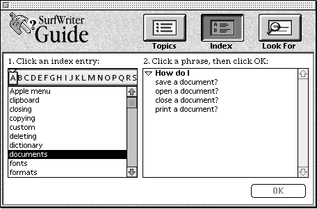
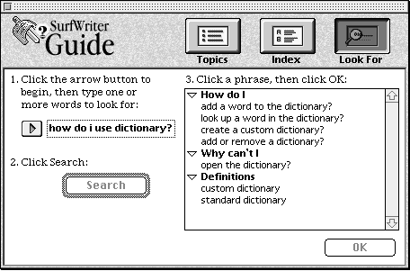
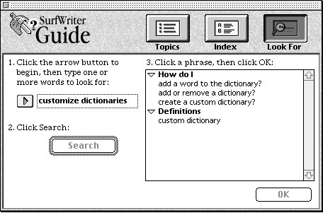

Legacy Document
Important: The information in this document is obsolete and should not be used for new development.
Important: The information in this document is obsolete and should not be used for new development.


Index and Look For Content
This section focuses on the files that specify the Index and Look For content for SurfWriter Guide. Illustrations of SurfWriter Guide's access window when Index is active and when Look For is active are shown, along with explanatory text describing how SurfWriter Guide implements its Index and Look For content.SurfWriter Guide provides a list of its index terms. And to enhance Apple Guide's searching facility, in addition to its index terms, SurfWriter Guide provides three lists: the ignore list, exception list, and synonym list.
Index Terms
The file "Index Entries.src" specifies the index terms for SurfWriter Guide. Figure C-7 shows SurfWriter Guide's access window when Index is active.
SurfWriter Guide's index terms, and the headers and topics associated with each index term, are shown in Listing C-18.
Listing C-18 Index terms ("Index Entries.src" file)
<Index> "dictionary" #index entry # specify headers and topics for this index term <Header> "How do I" #header #topics <Topic> "add a word to the dictionary?","SequenceAddWords" <Topic> "look up a word in the dictionary?","SequenceGeneric" <Topic> "create a custom dictionary?","SequenCreatCustDictionry" <Topic> "add or remove a dictionary?","SequenceGeneric" <Header> "Why can't I" <Topic> "open the dictionary?","SequenceGeneric" <Header> "Definitions" <Topic> "custom dictionary","SequenceDefnCustomDictionary" <Topic> "standard dictionary","SequenceDefnStdDictionary" <Index> "toolbar" #index entry <Header> "How do I" <Topic> "use the tools in the toolbar?","Toolbar" <Index> "tools" #index entry <Header> "How do I" <Topic> "use the tools in the toolbar?","Toolbar" <Index> "pencil" #index entry <Header> "How do I" <Topic> "use the tools in the toolbar?","Toolbar" <Index> "hammer" #index entry <Header> "How do I" <Topic> "use the tools in the toolbar?","Toolbar" <Index> "opening" #index entry <Header> "How do I" <Topic> "open a document?","SequenceGeneric" <Header> "Why can't I" <Topic> "open the dictionary?","SequenceGeneric" <Index> "custom" #index entry <Header> "How do I" <Topic> "create a custom dictionary?","SequenCreatCustDictionry" <Header> "Definitions" <Topic> "custom dictionary","SequenceDefnCustomDictionary" <Index> "standard" #index entry <Header> "Definitions" <Topic> "standard dictionary","SequenceDefnStdDictionary" <Index> "Utilities menu" #index entry <Header> "How do I" <Topic> "use the dictionary?","SequenceGeneric" <Topic> "use the thesaurus?","SequenceGeneric" #specify invisible index terms. #invisible index terms do not appear in the index, but are included # when the user searches using the Look For feature <Index> "customizing", FALSE #index entry (invisible) <Header> "How do I" <Topic> "add a word to the dictionary?","SequenceAddWords" <Topic> "add or remove a dictionary?","SequenceGeneric" <Topic> "create a custom dictionary?","SequenCreatCustDictionry" <Header> "Definitions" <Topic> "custom dictionary","SequenceDefnCustomDictionary" <Index> "spell", FALSE #index entry (invisible) <Header> "How do I" <Topic> "look up a word in the dictionary?","SequenceGeneric" <Index> "bitmap", FALSE #index entry (invisible) <Header> "How do I" <Topic> "use bitmapped fonts?","SequenceGeneric" <Topic> "create bitmapped graphics?" ,"SequenceGeneric" <Topic> "placeholder for topic?","SequenceGeneric" <Index> "definitions", FALSE #index entry (invisible) <Header> "Definitions" <Topic> "custom dictionary","SequenceDefnCustomDictionary" <Topic> "standard dictionary","SequenceDefnStdDictionary" #other index terms (that use placeholders for now) <Index> "Apple menu" #index entry <Header> "How do I" <Topic> "placeholder for topic?","SequenceGeneric" <Index> "clipboard" #index entry <Header> "How do I" <Topic> "placeholder for topic?","SequenceGeneric" <Index> "closing" #index entry <Header> "How do I" <Topic> "close a document?","SequenceGeneric" <Index> "copying" #index entry <Header> "How do I" <Topic> "placeholder for topic?","SequenceGeneric" <Index> "deleting" #index entry <Header> "How do I" <Topic> "placeholder for topic?","SequenceGeneric" <Index> "documents" #index entry <Header> "How do I" <Topic> "save a document?","SequenceGeneric" <Topic> "open a document?","SequenceGeneric" <Topic> "close a document?","SequenceGeneric" <Topic> "print a document?","SequenceGeneric" <Index> "fonts" #index entry <Header> "How do I" <Topic> "use bitmapped fonts?","SequenceGeneric" <Topic> "placeholder for topic?","SequenceGeneric" <Index> "formats" #index entry <Header> "How do I" <Topic> "placeholder for topic?","SequenceGeneric" <Index> "graphics" #index entry <Header> "How do I" <Topic> "create bitmapped graphics?","SequenceGeneric" <Topic> "placeholder for topic?","SequenceGeneric" <Index> "pasting" #index entry <Header> "How do I" <Topic> "placeholder for topic?","SequenceGeneric" <Index> "preferences" #index entry <Header> "How do I" <Topic> "placeholder for topic?","SequenceGeneric" <Index> "printing" #index entry <Header> "How do I" <Topic> "placeholder for topic?","SequenceGeneric" <Topic> "print a document?","SequenceGeneric" <Index> "replacing" #index entry <Header> "How do I" <Topic> "placeholder for topic?","SequenceGeneric" <Index> "saving" #index entry <Header> "How do I" <Topic> "save a document?","SequenceGeneric" <Index> "searching" #index entry <Header> "How do I" <Topic> "placeholder for topic?","SequenceGeneric" <Index> "selecting" #index entry <Header> "How do I" <Topic> "placeholder for topic?","SequenceGeneric" <Index> "styles" #index entry <Header> "How do I" <Topic> "placeholder for topic?","SequenceGeneric" <Index> "writing" #index entry <Header> "How do I" <Topic> "placeholder for topic?","SequenceGeneric"Note that several invisible index terms are defined in the "Index Entries.src" file. Apple Guide does not display invisible index terms in the Index window. However, Apple Guide includes both visible and invisible index terms when it searches the index as a result of the user entering a search phrase in the Look For window.The Ignore List
The file "Ignore List.src" specifies the words in SurfWriter Guide's ignore list. When first parsing a search phrase entered by the user, Apple Guide removes from the phrase any words that appear on the ignore list. For example, if the user enters the phrase "how do i use dictionary?" Apple Guide removes "how", "do", "I", and "use" from the phrase, resulting in the phrase "dictionary". "Dictionary" is an index term and, after checking the exception and synonym list, Apple Guide reports a match, as shown in Figure C-8.Figure C-8 Matching a search phrase

Apple Guide automatically removes from the user's search phrase numerals and other special characters, such as "$", "&", "+", "%", "?", and "-". For example, Apple Guide reduces the phrase "32-bit addressing" to "bit address". Listing C-19 shows words on SurfWriter Guide's ignore list.
Listing C-19 Ignore words ("Ignore List.src" file)
<ignore> "how" <ignore> "do" <ignore> "I" <ignore> "my" <ignore> "the" <ignore> "and" <ignore> "or" <ignore> "real" <ignore> "really" <ignore> "a" <ignore> "also" <ignore> "any" <ignore> "in" <ignore> "into" <ignore> "on" <ignore> "an" <ignore> "as" <ignore> "by" <ignore> "for" <ignore> "from" <ignore> "of" <ignore> "if" <ignore> "is" <ignore> "isn't" <ignore> "to" <ignore> "it" <ignore> "its" <ignore> "it's" <ignore> "look" <ignore> "up" <ignore> "this" <ignore> "that" <ignore> "why" <ignore> "when" <ignore> "these" <ignore> "can" <ignore> "can't" <ignore> "cannot" <ignore> "won't" <ignore> "create" <ignore> "use" <ignore> "add" <ignore> "remove" <ignore> "lookup" <ignore> "word"The Exception List
The file "Exception List.src" specifies the words in SurfWriter Guide's exception list. Listing C-20 shows the contents of this file. SurfWriter Guide places a word on its exception list only if the stemmed form of the word matches an existing index term. For example, SurfWriter Guide defines "custom" and "customizing" as two separate index terms. To prevent Apple Guide from stemming "customizing" to its root form ("custom"), "customizing" is included on the exception list. Thus, if the user enters "customizing" as a search phrase Apple Guide reports the correct matching index term. "Customize" is also placed on the exception list, to prevent stemming to "custom". In addition, "customize" is placed on the synonym list, associating it with the index term "customizing".Listing C-20 Words on the exception list ("Exception List.src" file)
#you usually place an index term on the exception list # ONLY when the term would otherwise stem to another # index term or whose root form has an alternate meaning <exception> "customize" <exception> "customizing" <exception> "preferences"The Synonym List
The file "Synonym List.src" specifies the words in SurfWriter Guide's synonym list. As you recall, when parsing a phrase, after removing words on the ignore list and stemming words except those on the exception list, Apple Guide then checks the synonym list. Apple Guide first checks whether the synonym list specifies the entire phrase as a synonym. If Apple Guide finds the phrase on the synonym list, it replaces the synonym with its associated phrase (usually its index term) then checks the index for a term matching this phrase. If it finds a matching index term, Apple Guide reports a match.For example, if the user enters "How do I create a site dictionary?" Apple Guide removes words on the ignore list and stems words not on the exception list. This results in the phrase "site dictionary". Apple Guide then checks the synonym list and replaces the synonym "site dictionary" with its associated index term, "dictionary". Apple Guide then searches the index for this phrase and finds a matching index term. Also note that one index term can have many synonyms; for example, SurfWriter Guide defines "palette" and "tool bar" as synonyms for "toolbar".
If Apple Guide does not find the phrase in the synonym list, then for each individual word, if the word is a synonym in the synonym list, it replaces the synonym with its index term. It then looks in the index for a term matching the parsed phrase (this time any words that are synonyms have been replaced by their equivalent index terms). If Apple Guide finds a match for the phrase, it displays the topics for the index term. If it doesn't find the phrase in the index, it looks in the list of index terms for each word. If Apple Guide finds a matching index term for more than one word in the phrase, Apple Guide intersects the results and displays any topics that are common to both words.
For example, if the user enters the search phrase "customize dictionaries", Apple Guide stems "dictionaries" to "dictionary" (it does not stem "customize" because this word is on the exception list). Apple Guide then looks in the synonym list for the phrase "customize dictionary". Because "customize dictionary" is not on the synonym list, Apple Guide then checks the synonym list again, this time for each word in the phrase. "Customize" is on the synonym list, so Apple Guide replaces it with the index term "customizing". "Dictionary" is not on the synonym list so Apple Guide leaves "dictionary" as is. Next, Apple Guide looks in the index for the phrase "customizing dictionary". Because this phrase isn't in the index, Apple Guide then looks in the index for the term "dictionary" and for the term "customizing", and finally displays the intersection of this list. Figure C-9 shows the results of this search. Note that Apple Guide displays only those topics that are common to both index terms.
Figure C-9 Results of an intersection between two index terms

Listing C-21 shows the words on the SurfWriter Guide's synonym list.
Listing C-21 Words on the synonym list ("Synonym List.src" file)
#specify the index term, then specify the synonym <syn> "clipboard", "clip" <syn> "clipboard", "show clipboard" <syn> "clipboard", "hide clipboard" <syn> "clipboard", "scrap" <syn> "closing", "close" <syn> "closing", "closebox" <syn> "closing", "close box" <syn> "closing", "close window" <syn> "copying", "clone" <syn> "copying", "copy" <syn> "copying", "copy command" <syn> "copying", "duplic" <syn> "customizing", "customize" <syn> "definitions", "definit" <syn> "deleting", "clear" <syn> "deleting", "clear command" <syn> "deleting", "cut" <syn> "deleting", "cut command" <syn> "deleting", "delet" <syn> "deleting", "delete" <syn> "dictionary", "site dictionary" <syn> "documents", "docum" <syn> "documents", "file" <syn> "fonts", "font" <syn> "fonts", "bitmap font" <syn> "fonts", "outline font" <syn> "formats", "format" <syn> "graphics", "graphic" <syn> "graphics", "bitmap graphic" <syn> "hammer", "hammer icon" <syn> "opening", "open" <syn> "opening", "open command" <syn> "opening", "double click" <syn> "pasting", "past" <syn> "pasting", "paste" <syn> "pencil", "pencil icon" <syn> "printing", "print" <syn> "printing", "print command" <syn> "printing", "printer" <syn> "printing", "LaserWrit" <syn> "printing", "ImageWrit" <syn> "printing", "spool" <syn> "replacing", "replac" <syn> "replacing", "replace" <syn> "saving", "save" <syn> "saving", "save command" <syn> "saving", "save work" <syn> "saving", "store" <syn> "searching", "searche" <syn> "searching", "search" <syn> "selecting", "select" <syn> "styles", "style" <syn> "styles", "bold" <syn> "styles", "ital" <syn> "styles", "underline" <syn> "styles", "shadow" <syn> "tools", "tool" <syn> "toolbar", "palette" <syn> "toolbar", "tool bar" <syn> "utilities menu", "util" <syn> "utilities menu", "util menu" <syn> "writing", "write"